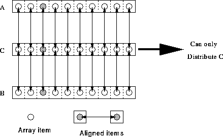

Simple example,
REAL, DIMENSION(10) :: A, B, C !HPF$ ALIGN (:) WITH C(:) :: A, B

The alignment says: A(i) and B(i) reside on same
processor as C(i). Because of the `: 's,
A, B and C must conform. If we have
!HPF$ ALIGN (j) WITH C(j) :: A, B
then there is no requirement that the arrays conform.
For more information, click here